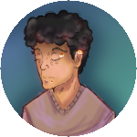

Meu perfil Social
Algumas informações sobre mim

Olá! Eu sou Richard, estudande de programação, prestes a cursar "Sistemas da Computação"
na UESPI, e estou agora antecipando talvez, os estudos de front-end (HTML, CSS e JavaScript),
e almejo conseguir sucesso no meio.
Minhas redes sociais
 richartbrito - Aqui é onde se encotra meu hobby, que eu chamo de arte.
richartbrito - Aqui é onde se encotra meu hobby, que eu chamo de arte.
 RichARTlll - Meu Twitter, que infelizmente foi hackeado, mas colocarei o link, apenas para fins didáticos.
RichARTlll - Meu Twitter, que infelizmente foi hackeado, mas colocarei o link, apenas para fins didáticos.
 Richard Brito - E por fim, meu Linkedin, que também não é de grande utilidade, esta aqui apenas para fins didáticos.
Richard Brito - E por fim, meu Linkedin, que também não é de grande utilidade, esta aqui apenas para fins didáticos.